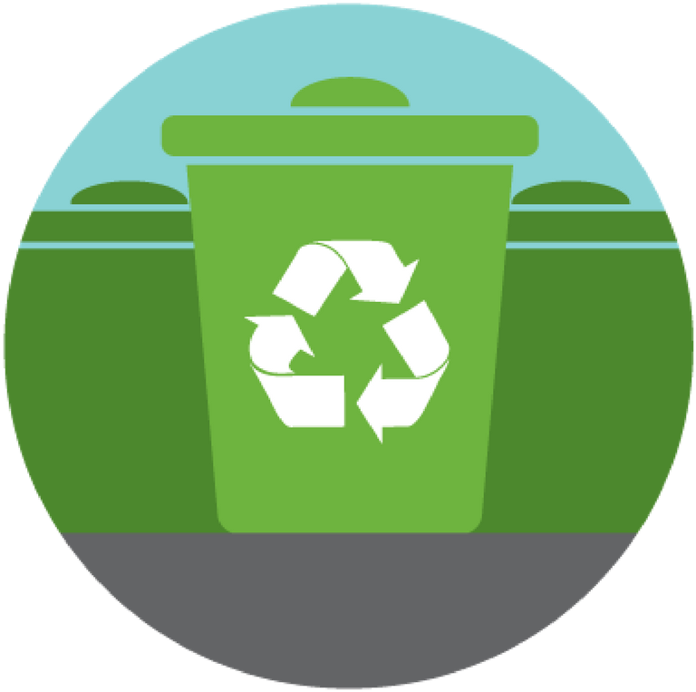

<ion-header>
  <ion-toolbar color="primary">
    
  </ion-toolbar>
</ion-header>

<ion-content>

  <ion-item>
    <ion-title>Local Recycle Points</ion-title>
  </ion-item>
  <ion-item><ion-button expand="block" (click) = "showNearby()">SHOW NEARBY</ion-button> <ion-button expand="block" (click) = "findPlace()">SHOW RECYCLE</ion-button></ion-item>
  <div class = "box">
    <div #map id="map"></div>
  </div>

</ion-content>
